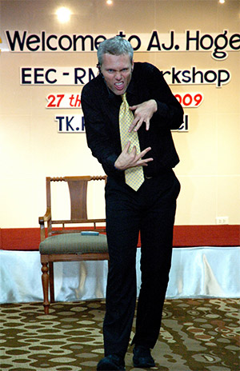
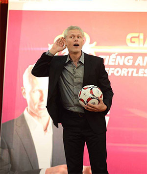
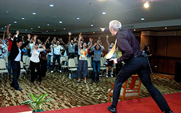

Listen and Answer
Mini-story lessons were originally called "Listen and Answer Story Lessons". Since they proved to be AJ's most effective lessons they were given a more effective name.
Gossip
AJ used to date Kristin from Learn Real English. They broke up but remained best friends to date.
Way of the linguist
In 2006 when AJ worked as a tutor in his company, Steve Kaufman knew "only" nine languages. He can now speak more than twenty languages.
Nicknames
AJ's nicknames in school:
- Applejack
- Apple Juice
English and the city
While he was still teaching English at school, at one of his last jobs, AJ used one episode of "Sex and the city" in one of his classes. Not surprisingly, the students loved his class.
Tony addict
After achieving financial freedom AJ did a lot of traveling. Also, he attended lots of seminars. AJ and Tomoe attended all Tony Robbins' active seminars at the time (five of them).
Planning?!
There are probably more courses AJ was planning to make than courses he actually made. He planned to do a teaching course, a course for children, a course for absolute beginners, public speaking course, a leadership course... He did create a public speaking course with his friend which was recorded but never published.
Filmmaker
AJ is a movie buff. Not only does he like watching movies but he attempted to make some. He attended a photography and filmmaking seminar. He also wrote a script for a movie and planned to direct that movie but didn't follow through.
Cool father
All parents know that walking and carrying a baby for a while can be tough. But what if there are two babies?
Origin of AJ's accent
When he was 12 AJ's family moved from Virginia to New Jersey. He used to have a strong southern accent and was constantly ridiculed by other kids in school. He quickly learned to speak with a standard accent, which we all love. He stayed in NJ only two years and moved to Georgia, but he never spoke with the southern accent again.
Blogger
AJ used to write a personal blog called "Hobopoet". It was mostly about travel, freedom, and adventure. Anyhow, his most famous blog is on the address: effortlessacquisition.blogspot.com. The website is still active and has a better layout than this site ;). Check it out here!
Gladiator
AJ was a FAST (Fear Adrenal Stress Training) instructor and was planning to do a self-defence seminar. He and Tomoe had a project called Gladiator Self Defense. According to AJ everybody should learn how to defend themselves. His favorite way - Jiu-jitsu
Firewalker
As a part of one of Tony Robbins seminars, both AJ and Tomoe walked through the fire.
Don't trust me?
Equanimity
AJ always reacts with composure when his website crashes.
Holy ...
Saint AJ de Barcelona The crazy
(in his own words)
Living in a car troubles
"Bathing was simple.....in the Spring, when the weather was cold, I made due with sponge baths. Typically I'd find a lockable public bathroom and bring my towel and toiletries in a book bag. Once inside, I unpacked and washed one body part at a time... using a small sponge and the bathroom sink. I moved quickly and could clean my entire body in less than five minutes. Once clean, I towelled off- then cleaned the bathroom to leave no evidence of what I'd been doing. I needed these bathrooms-- and did not want to arouse suspicion or resentment from the owners.... I tried to practice a “low impact” form of homelessness..."
- AJ Hoge, from Homeless In Athens, Part 1A
Favorite pet
One of the first "stars" of AJ's podcast, in the early beginnings, was Kristin's cat named Sigmund. He was the subject of several of AJ's podcasts. Sigmund was diagnosed with an incurable form of sinus cancer. With lots of love and additional care, Kristin managed to extend his life for a while but the illness was merciless.
Camino de Santiago
The Camino de Santiago is a network of pilgrims' ways leading to the shrine of the apostle Saint James the Great in northwestern Spain. AJ walked The Camino with his friend Joe. The walk was 32 days long. It is probably the favorite trip he's ever taken. He didn't do it for religious purposes but the trip still had a deeper meaning. It was a great bonding experience for AJ and Joe which strengthen their friendship even more.
AJ prepared seriously for several months focusing primarily on his endurance and Spanish skills. The trip was challenging but with good preparation and the right mindset, it was no problem for AJ.
Camino troubles
Walking the Camino, AJ had lots of challenges to overcome. What was the worst in your opinion:
- the heat
- the wind
- rocky paths
- mosquitoes
- talking to natives
The American school year
Do you know what's the one thing AJ did like about the traditional school system?
Body language
In his public events, AJ is well-known for his energy, loud voice, strong body language, and
Football
When it comes to football AJ prefers American. He's not much of a "soccer" fan, but he supports both American and Japanese national teams. Also, he sometimes uses famous players, like Messi, in some of the mini-stories. He's also
Photography
One of AJ's big interests, and who knows, maybe possible occupation.

Electrifying
They say a picture is worth a thousand words. I don't have words to describe the atmosphere at AJ's seminars. Therefore
No failure
AJ is a natural entrepreneur. But his first two attempts at starting a business had failed. He failed as a chiropractor. Then he failed at network marketing. The third attempt was and still is a huge success - Effortless English
No failure only learning experience!
Something wrong and funny
With so many episodes done, we can argue the whole day what is the funniest EE Show. In my opinion, gold goes to "Something Wrong in Japan". It is about AJ's experience as an assistant teacher in Japan.
The way he describes an English class is hilarious. He said the word "Japanese" more than 80 times in the first ten minutes of the podcast.
The class he was describing is not funny at all. Unfortunatelly, English is still taught this way in many places.
Funny or sad, listen HERE and judge yourself!
Shooting mosquitoes with a rifle
AJ's mini-stories can be very crazy. My favorite - Filbert the Monkey
There was a monkey. The monkey's name was Filbert. Filbert liked to shoot mosquitoes (y'know, bzzzz), he liked to shoot mosquitoes with his gun. Luckily he had total competence with his gun. He had competence with a rifle. A rifle is a big, long gun. Because, in fact, shooting mosquitoes is very demanding...
Filbert was a very intelligent monkey actually. In fact he was very well read. He would read books and shoot mosquitoes at the same time. So he's reading a book and shooting, pow, pow, pow, pow, pow.Filbert read books about philosophy. He read books about religion and philosophy. He read Plato and Aristotle. He read books about Buddhism. He read books by the Dalai Lama of Tibet. In fact, the Dalai Lama was his favorite writer. Now because he read so many books by the Dalai Lama he subconsciously learned the Dalai Lama's philosophy. Now of course the Dalai Lama's philosophy is very peaceful. The Dalai Lama does not like killing. He's a peaceful man. So there was a problem...
To find out how he solved this problem, join Power English Course here!
Three jobs
AJ has always hated jobs. He used to change jobs all the time. But shortly before starting Effortless English, he'd been working three jobs at the same time.
- He worked as a teacher at an English school in San Francisco
- He was a tutor with The Linguist (now LingQ)
- He was also giving private English classes to several students
Censorship
As a person who's always telling the truth and who's not afraid to speak out about lots of sensitive topics in our modern society, AJ was constantly on the radar of silicon valley companies. He was being censored by Facebook, Twitter, and especially Google. This affected his business because his marketing was primarily based on Google ads.
Luckily the company survived and AJ learned the lesson. Since then his strategy is decentralization.
Poison
In his podcast, AJ openly criticized school, American politics, some politicians, media, Holywood, some famous actors, more school, more media, social marxism, social media, political correctness, school again, fake virus, media again...
Nevertheless, the only episode that is completely censored and removed from all platforms was called "Porn is poison", where he criticized pornography.
Ask yourself why next time you think about watching porn. It's just another way of controlling, and it's very powerful and destructive.
Luckily AJ recently added this episode for YouTube supporting members. One more reason to support the Show on YouTube.